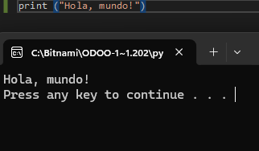

La ciberseguridad es el conjunto de prácticas, tecnologías y medidas diseñadas para proteger sistemas informáticos, redes, dispositivos y datos frente a accesos no autorizados, ataques, robos o daños. Su objetivo es garantizar la confidencialidad, integridad y disponibilidad de la información digital. En un mundo cada vez más conectado, la ciberseguridad ayuda a prevenir amenazas como virus, malware, phishing, ransomware y otros ciberataques que pueden comprometer tanto a personas como a empresas. En pocas palabras, la ciberseguridad es la protección del mundo digital para que la información y los sistemas permanezcan seguros y funcionando correctamente.
📌 Una función es un bloque de código que realiza una tarea específica.
Las funciones pueden:
print())✨ En Python, las funciones son muy flexibles ya que pueden realizar acciones, devolver valores o ambas cosas a la vez.
🚀 Función: bloque de código reutilizable que realiza una tarea y/o devuelve un resultado.

Son funciones que ya vienen incluidas en Python. No necesitas instalarlas ni configurarlas.
print() → muestra texto en pantalla.Provienen de módulos internos o externos. Algunas vienen con Python y otras debes instalarlas.
Son funciones programadas por el desarrollador.
🚀 Ejemplo:
❌func1()→ no describe lo que hace.
✅imprimir_mensaje()→ nombre claro y descriptivo.
Python es un lenguaje de programación de alto nivel, interpretado y de propósito general, diseñado para priorizar la legibilidad del código y la productividad del desarrollador. Se caracteriza por una sintaxis clara y sencilla que permite expresar conceptos complejos con menos líneas de código en comparación con lenguajes de bajo nivel. Es un lenguaje orientado a objetos, lo que permite organizar el código mediante clases y objetos para una mejor estructura y reutilización. Python es multiplataforma y dinámicamente tipado, lo que significa que los tipos de datos se determinan en tiempo de ejecución, facilitando el desarrollo rápido aunque con menor control estricto del sistema. Es ampliamente utilizado en desarrollo web, automatización, inteligencia artificial, machine learning y ciberseguridad, gracias a su gran ecosistema de librerías y comunidad activa.
Python es un lenguaje de programación de alto nivel, interpretado y de propósito general, diseñado para priorizar la legibilidad del código y la productividad del desarrollador. Se caracteriza por una sintaxis clara y sencilla que permite expresar conceptos complejos con menos líneas de código en comparación con lenguajes de bajo nivel. Es un lenguaje orientado a objetos, lo que permite organizar el código mediante clases y objetos para una mejor estructura y reutilización. Python es multiplataforma y dinámicamente tipado, lo que significa que los tipos de datos se determinan en tiempo de ejecución, facilitando el desarrollo rápido aunque con menor control estricto del sistema. Es ampliamente utilizado en desarrollo web, automatización, inteligencia artificial, machine learning y ciberseguridad, gracias a su gran ecosistema de librerías y comunidad activa.
Python es un lenguaje de programación de alto nivel, interpretado y de propósito general, diseñado para priorizar la legibilidad del código y la productividad del desarrollador. Se caracteriza por una sintaxis clara y sencilla que permite expresar conceptos complejos con menos líneas de código en comparación con lenguajes de bajo nivel. Es un lenguaje orientado a objetos, lo que permite organizar el código mediante clases y objetos para una mejor estructura y reutilización. Python es multiplataforma y dinámicamente tipado, lo que significa que los tipos de datos se determinan en tiempo de ejecución, facilitando el desarrollo rápido aunque con menor control estricto del sistema. Es ampliamente utilizado en desarrollo web, automatización, inteligencia artificial, machine learning y ciberseguridad, gracias a su gran ecosistema de librerías y comunidad activa.
Python es un lenguaje de programación de alto nivel, interpretado y de propósito general, diseñado para priorizar la legibilidad del código y la productividad del desarrollador. Se caracteriza por una sintaxis clara y sencilla que permite expresar conceptos complejos con menos líneas de código en comparación con lenguajes de bajo nivel. Es un lenguaje orientado a objetos, lo que permite organizar el código mediante clases y objetos para una mejor estructura y reutilización. Python es multiplataforma y dinámicamente tipado, lo que significa que los tipos de datos se determinan en tiempo de ejecución, facilitando el desarrollo rápido aunque con menor control estricto del sistema. Es ampliamente utilizado en desarrollo web, automatización, inteligencia artificial, machine learning y ciberseguridad, gracias a su gran ecosistema de librerías y comunidad activa.
Python es un lenguaje de programación de alto nivel, interpretado y de propósito general, diseñado para priorizar la legibilidad del código y la productividad del desarrollador. Se caracteriza por una sintaxis clara y sencilla que permite expresar conceptos complejos con menos líneas de código en comparación con lenguajes de bajo nivel. Es un lenguaje orientado a objetos, lo que permite organizar el código mediante clases y objetos para una mejor estructura y reutilización. Python es multiplataforma y dinámicamente tipado, lo que significa que los tipos de datos se determinan en tiempo de ejecución, facilitando el desarrollo rápido aunque con menor control estricto del sistema. Es ampliamente utilizado en desarrollo web, automatización, inteligencia artificial, machine learning y ciberseguridad, gracias a su gran ecosistema de librerías y comunidad activa.
Python es un lenguaje de programación de alto nivel, interpretado y de propósito general, diseñado para priorizar la legibilidad del código y la productividad del desarrollador. Se caracteriza por una sintaxis clara y sencilla que permite expresar conceptos complejos con menos líneas de código en comparación con lenguajes de bajo nivel. Es un lenguaje orientado a objetos, lo que permite organizar el código mediante clases y objetos para una mejor estructura y reutilización. Python es multiplataforma y dinámicamente tipado, lo que significa que los tipos de datos se determinan en tiempo de ejecución, facilitando el desarrollo rápido aunque con menor control estricto del sistema. Es ampliamente utilizado en desarrollo web, automatización, inteligencia artificial, machine learning y ciberseguridad, gracias a su gran ecosistema de librerías y comunidad activa.
Python es un lenguaje de programación de alto nivel, interpretado y de propósito general, diseñado para priorizar la legibilidad del código y la productividad del desarrollador. Se caracteriza por una sintaxis clara y sencilla que permite expresar conceptos complejos con menos líneas de código en comparación con lenguajes de bajo nivel. Es un lenguaje orientado a objetos, lo que permite organizar el código mediante clases y objetos para una mejor estructura y reutilización. Python es multiplataforma y dinámicamente tipado, lo que significa que los tipos de datos se determinan en tiempo de ejecución, facilitando el desarrollo rápido aunque con menor control estricto del sistema. Es ampliamente utilizado en desarrollo web, automatización, inteligencia artificial, machine learning y ciberseguridad, gracias a su gran ecosistema de librerías y comunidad activa.
Python es un lenguaje de programación de alto nivel, interpretado y de propósito general, diseñado para priorizar la legibilidad del código y la productividad del desarrollador. Se caracteriza por una sintaxis clara y sencilla que permite expresar conceptos complejos con menos líneas de código en comparación con lenguajes de bajo nivel. Es un lenguaje orientado a objetos, lo que permite organizar el código mediante clases y objetos para una mejor estructura y reutilización. Python es multiplataforma y dinámicamente tipado, lo que significa que los tipos de datos se determinan en tiempo de ejecución, facilitando el desarrollo rápido aunque con menor control estricto del sistema. Es ampliamente utilizado en desarrollo web, automatización, inteligencia artificial, machine learning y ciberseguridad, gracias a su gran ecosistema de librerías y comunidad activa.
Python es un lenguaje de programación de alto nivel, interpretado y de propósito general, diseñado para priorizar la legibilidad del código y la productividad del desarrollador. Se caracteriza por una sintaxis clara y sencilla que permite expresar conceptos complejos con menos líneas de código en comparación con lenguajes de bajo nivel. Es un lenguaje orientado a objetos, lo que permite organizar el código mediante clases y objetos para una mejor estructura y reutilización. Python es multiplataforma y dinámicamente tipado, lo que significa que los tipos de datos se determinan en tiempo de ejecución, facilitando el desarrollo rápido aunque con menor control estricto del sistema. Es ampliamente utilizado en desarrollo web, automatización, inteligencia artificial, machine learning y ciberseguridad, gracias a su gran ecosistema de librerías y comunidad activa.
Python es un lenguaje de programación de alto nivel, interpretado y de propósito general, diseñado para priorizar la legibilidad del código y la productividad del desarrollador. Se caracteriza por una sintaxis clara y sencilla que permite expresar conceptos complejos con menos líneas de código en comparación con lenguajes de bajo nivel. Es un lenguaje orientado a objetos, lo que permite organizar el código mediante clases y objetos para una mejor estructura y reutilización. Python es multiplataforma y dinámicamente tipado, lo que significa que los tipos de datos se determinan en tiempo de ejecución, facilitando el desarrollo rápido aunque con menor control estricto del sistema. Es ampliamente utilizado en desarrollo web, automatización, inteligencia artificial, machine learning y ciberseguridad, gracias a su gran ecosistema de librerías y comunidad activa.